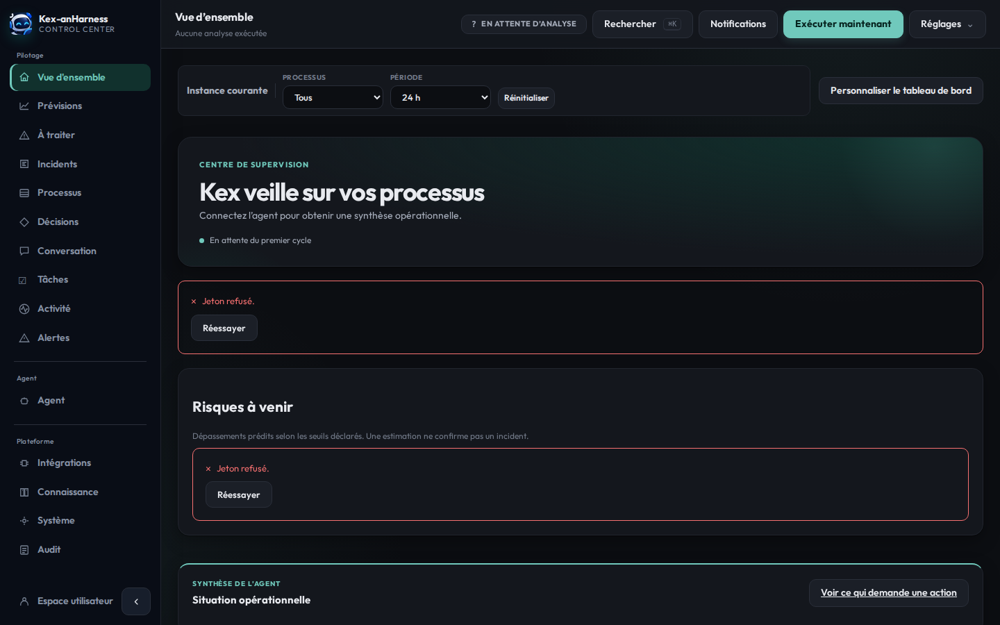
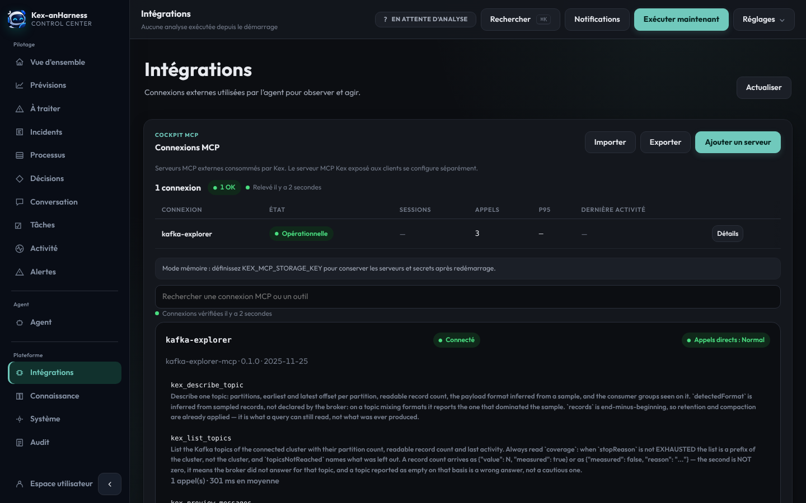

A governed AI agent that works through MCP tools. It discovers them at runtime, calls them on real systems, explains what it did — and keeps humans in control of anything that acts.
Sixteen screens to observe, understand, decide, act and verify — in French, from the same container on port 8081.


Add and test HTTP, SSE or stdio servers from the console; decide which tools each connection may expose to the model.
Each capability declares how far it may act. An execution mode can only narrow it, and an unlisted capability is forbidden.
Anything below the confidence floor goes back to a person — from the console, or from Slack, with signed callbacks.
What the agent saw, decided and did, with the tool calls behind it — a decision can be read back, not just believed.
A missing measurement is never zero, an unreadable state is UNKNOWN, never OK — a dashboard that looks green has to be green.
Bearer authentication, encrypted MCP configuration, explicit stdio allowlists, an SBOM and a vulnerability scan before every image is pushed.
Each one runs on its own; all three are published under the same Docker Hub namespace and plug into each other through MCP.
Explore Kafka, query it in Flink SQL, audit it with AI — and serve it to agents as a read-only MCP server. The agent reads the cluster through it.
compagnonsdudev/kafkaexplorer · AGPL-3.0
Turn your documents into a private, fine-tuned AI — local RAG, fine-tuning, and an MCP server over the corpus. The agent searches your runbooks through it.
compagnonsdudev/spectrallm · AGPL-3.0
A governed AI agent that works through MCP tools — supervision, human approvals, audit trail.
compagnonsdudev/kex-agent-ai · GPL-3.0
All three together, from published images — nothing is built:
git clone https://github.com/devdownin/Kafkaexplorer.git && cd Kafkaexplorer
docker compose -f compose/spectra-hub.yml -f compose/spectra-hub.mcp.yml \
-f compose/ecosystem.yml up -dOne port plan for the three: 8080 Kafka SQL Explorer · 8081 Kex-anHarness · 8088 / 8089 SpectraLLM UI / API · 9092 Kafka.
docker run --rm -p 8081:8081 \
-e ANTHROPIC_API_KEY=sk-ant-... -e KEX_AGENT_API_KEY=secret \
-e KAFKA_EXPLORER_URL=http://host.docker.internal:8080 \
compagnonsdudev/kex-agent-ai:latestThen open http://localhost:8081 and paste the same bearer once. With no Explorer yet, the repository's docker compose up starts a broker, Kafka SQL Explorer and the agent together.